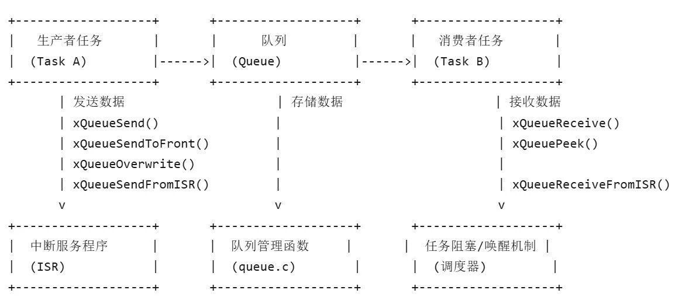

freertos之queue模块（上）
在RTOS中，多个任务（线程）可能同时运行，它们需要安全地交换数据。队列提供了一种线程安全的方式，让任务可以：
xQueueSend）xQueueReceive）示例场景 : 生产者-消费者模型
- 任务A
（生产者）生成数据并发送到队列。 任务B （消费者）从队列读取数据并处理。 如果队列为空，消费者任务可以阻塞等待，直到有数据到达。 其中，队列可以作为数据缓冲区，解决生产者和消费者速度不匹配的问题
- 生产者比消费者快
队列可以暂存数据，防止数据丢失。 - 消费者比生产者快
队列可以让消费者等待，避免忙等待（Busy Waiting）

当uxItemSize > 0时，只是一个普通队列，当uxItemSize = 0时，则无实际存储区，pcHead被强制指向控制块自身（pxNewQueue-pcHead(int8_t*)pxNewQueue），仅通过uxMessagesWaiting计数（信号量/互斥量）。
pcHead被强制指向控制块自身（pxNewQueue-pcHead(int8_t*)pxNewQueue），仅通过uxMessagesWaiting计数（信号量/互斥量）。| 操作 | 物理结构影响 |
|---|---|
| xQueueSend | pcWriteTo指向的位置2. pcWriteTo前进uxItemSize字节 |
| xQueueReceive | u.xQueue.pcReadFrom读取数据2. 读指针前进 uxItemSize字节 |
| 队列满判断 | uxMessagesWaiting == uxLength |
| 队列空判断 | uxMessagesWaiting == 0 |

1. 发送数据到队列（生产者任务）
xQueueSend() / xQueueSendToBack()
- 功能 向队列尾部发送数据（FIFO 模式）
- 适用场景 普通任务向队列发送数据
- 参数
xQueue 队列句柄pvItemToQueue 要发送的数据指针 xTicksToWait 阻塞时间（ portMAX_DELAY表示无限等待） - 返回值
pdPASS 发送成功。 errQUEUE_FULL 队列已满（非阻塞模式下）
2. 从队列接收数据（消费者任务）
(1) xQueueReceive()
- 功能 从队列头部取出数据（FIFO 模式）
- 适用场景 普通任务从队列读取数据
- 参数
xQueue 队列句柄 pvBuffer 接收数据的缓冲区xTicksToWait 阻塞时间（portMAX_DELAY表示无限等待） - 返回值
pdPASS 接收成功。 errQUEUE_EMPTY 队列为空（非阻塞模式下）
(2) xQueuePeek()
- 功能 查看队列头部数据但不移除（类似 Receive但不删除数据）
- 适用场景 检查队列数据但不消费
3. 任务与中断间通信
xQueueSendFromISR()
- 功能 中断服务程序（ISR）向队列发送数据
- 参数
xQueue 队列句柄pvItemToQueue 数据指针pxHigherPriorityTaskWoken用于唤醒更高优先级任务（可置NULL）
xQueueAddToSet（）/xQueueRemoveFromSet(）
- 功能 将队列从队列集添加/移除
下面，我将具体讲解这一系列函数中的重要部分。
QueueHandle_t xQueueGenericCreate( const UBaseType_t uxQueueLength,const UBaseType_t uxItemSize,const uint8_t ucQueueType ){Queue_t * pxNewQueue;size_t xQueueSizeInBytes;uint8_t * pucQueueStorage;configASSERT( uxQueueLength > ( UBaseType_t ) 0 );/* Allocate enough space to hold the maximum number of items that* can be in the queue at any time. It is valid for uxItemSize to be* zero in the case the queue is used as a semaphore. */xQueueSizeInBytes = ( size_t ) ( uxQueueLength * uxItemSize ); /*lint !e961 MISRA exception as the casts are only redundant for some ports. *//* Check for multiplication overflow. */configASSERT( ( uxItemSize == 0 ) || ( uxQueueLength == ( xQueueSizeInBytes / uxItemSize ) ) );/* Check for addition overflow. */configASSERT( ( sizeof( Queue_t ) + xQueueSizeInBytes ) > xQueueSizeInBytes );/* Allocate the queue and storage area. Justification for MISRA* deviation as follows: pvPortMalloc() always ensures returned memory* blocks are aligned per the requirements of the MCU stack. In this case* pvPortMalloc() must return a pointer that is guaranteed to meet the* alignment requirements of the Queue_t structure - which in this case* is an int8_t *. Therefore, whenever the stack alignment requirements* are greater than or equal to the pointer to char requirements the cast* is safe. In other cases alignment requirements are not strict (one or* two bytes). */pxNewQueue = ( Queue_t * ) pvPortMalloc( sizeof( Queue_t ) + xQueueSizeInBytes ); /*lint !e9087 !e9079 see comment above. */if( pxNewQueue != NULL ){/* Jump past the queue structure to find the location of the queue* storage area. */pucQueueStorage = ( uint8_t * ) pxNewQueue;pucQueueStorage += sizeof( Queue_t ); /*lint !e9016 Pointer arithmetic allowed on char types, especially when it assists conveying intent. */{/* Queues can be created either statically or dynamically, so* note this task was created dynamically in case it is later* deleted. */pxNewQueue->ucStaticallyAllocated = pdFALSE;}prvInitialiseNewQueue( uxQueueLength, uxItemSize, pucQueueStorage, ucQueueType, pxNewQueue );}else{traceQUEUE_CREATE_FAILED( ucQueueType );mtCOVERAGE_TEST_MARKER();}return pxNewQueue;}
/*-----------------------------------------------------------*/static void prvInitialiseNewQueue( const UBaseType_t uxQueueLength,const UBaseType_t uxItemSize,uint8_t * pucQueueStorage,const uint8_t ucQueueType,Queue_t * pxNewQueue ){/* Remove compiler warnings about unused parameters should* configUSE_TRACE_FACILITY not be set to 1. */( void ) ucQueueType;if( uxItemSize == ( UBaseType_t ) 0 ){/* No RAM was allocated for the queue storage area, but PC head cannot* be set to NULL because NULL is used as a key to say the queue is used as* a mutex. Therefore just set pcHead to point to the queue as a benign* value that is known to be within the memory map. */pxNewQueue->pcHead = ( int8_t * ) pxNewQueue;}else{/* Set the head to the start of the queue storage area. */pxNewQueue->pcHead = ( int8_t * ) pucQueueStorage;}/* Initialise the queue members as described where the queue type is* defined. */pxNewQueue->uxLength = uxQueueLength;pxNewQueue->uxItemSize = uxItemSize;( void ) xQueueGenericReset( pxNewQueue, pdTRUE );{pxNewQueue->ucQueueType = ucQueueType;}{pxNewQueue->pxQueueSetContainer = NULL;}traceQUEUE_CREATE( pxNewQueue );}/*-----------------------------------------------------------*/
对于xQueueGenericCreate（）创建函数，我们需要输入我们需要队列的长度和每个item的大小（字节数）。这个函数会计算所需总内存大小 = 队列控制块(Queue_t) + 队列存储区(uxLength * uxItemSize)并且调用pvPortMalloc分配内存，计算使用存储区的位置并且调用prvInitialiseNewQueue进行实际初始化。
对于prvInitialiseNewQueue() 函数，会由xQueueGenericCreate（）进行调用。这个函数负责初始化新创建的队列结构。这个函数有几步核心流程：
（1）设置队列头指针：
如果项目大小为0（用作信号量/互斥量），将 pcHead指向队列结构本身否则，将 pcHead指向分配的存储区开始位置。
存储队列长度( uxLength)存储项目大小( uxItemSize)
xQueueGenericReset：重置队列状态（设置写/读位置、计数器等） 第二个参数 pdTRUE表示这是队列创建时的初始化
设置完成后，这块区域则会成为一个真正可用的queue。
2.向队列发送xQueueGenericSend( ）
BaseType_t xQueueGenericSend( QueueHandle_t xQueue,const void * const pvItemToQueue,TickType_t xTicksToWait,const BaseType_t xCopyPosition ){BaseType_t xEntryTimeSet = pdFALSE, xYieldRequired;TimeOut_t xTimeOut;Queue_t * const pxQueue = xQueue;configASSERT( pxQueue );configASSERT( !( ( pvItemToQueue == NULL ) && ( pxQueue->uxItemSize != ( UBaseType_t ) 0U ) ) );configASSERT( !( ( xCopyPosition == queueOVERWRITE ) && ( pxQueue->uxLength != 1 ) ) );{configASSERT( !( ( xTaskGetSchedulerState() == taskSCHEDULER_SUSPENDED ) && ( xTicksToWait != 0 ) ) );}/*lint -save -e904 This function relaxes the coding standard somewhat to* allow return statements within the function itself. This is done in the* interest of execution time efficiency. */for( ; ; ){taskENTER_CRITICAL();{/* Is there room on the queue now? The running task must be the* highest priority task wanting to access the queue. If the head item* in the queue is to be overwritten then it does not matter if the* queue is full. */if( ( pxQueue->uxMessagesWaiting < pxQueue->uxLength ) || ( xCopyPosition == queueOVERWRITE ) ){traceQUEUE_SEND( pxQueue );{const UBaseType_t uxPreviousMessagesWaiting = pxQueue->uxMessagesWaiting;xYieldRequired = prvCopyDataToQueue( pxQueue, pvItemToQueue, xCopyPosition );if( pxQueue->pxQueueSetContainer != NULL ){if( ( xCopyPosition == queueOVERWRITE ) && ( uxPreviousMessagesWaiting != ( UBaseType_t ) 0 ) ){/* Do not notify the queue set as an existing item* was overwritten in the queue so the number of items* in the queue has not changed. */mtCOVERAGE_TEST_MARKER();}else if( prvNotifyQueueSetContainer( pxQueue ) != pdFALSE ){/* The queue is a member of a queue set, and posting* to the queue set caused a higher priority task to* unblock. A context switch is required. */queueYIELD_IF_USING_PREEMPTION();}else{mtCOVERAGE_TEST_MARKER();}}else{/* If there was a task waiting for data to arrive on the* queue then unblock it now. */if( listLIST_IS_EMPTY( &( pxQueue->xTasksWaitingToReceive ) ) == pdFALSE ){if( xTaskRemoveFromEventList( &( pxQueue->xTasksWaitingToReceive ) ) != pdFALSE ){/* The unblocked task has a priority higher than* our own so yield immediately. Yes it is ok to* do this from within the critical section - the* kernel takes care of that. */queueYIELD_IF_USING_PREEMPTION();}else{mtCOVERAGE_TEST_MARKER();}}else if( xYieldRequired != pdFALSE ){/* This path is a special case that will only get* executed if the task was holding multiple mutexes* and the mutexes were given back in an order that is* different to that in which they were taken. */queueYIELD_IF_USING_PREEMPTION();}else{mtCOVERAGE_TEST_MARKER();}}}{xYieldRequired = prvCopyDataToQueue( pxQueue, pvItemToQueue, xCopyPosition );/* If there was a task waiting for data to arrive on the* queue then unblock it now. */if( listLIST_IS_EMPTY( &( pxQueue->xTasksWaitingToReceive ) ) == pdFALSE ){if( xTaskRemoveFromEventList( &( pxQueue->xTasksWaitingToReceive ) ) != pdFALSE ){/* The unblocked task has a priority higher than* our own so yield immediately. Yes it is ok to do* this from within the critical section - the kernel* takes care of that. */queueYIELD_IF_USING_PREEMPTION();}else{mtCOVERAGE_TEST_MARKER();}}else if( xYieldRequired != pdFALSE ){/* This path is a special case that will only get* executed if the task was holding multiple mutexes and* the mutexes were given back in an order that is* different to that in which they were taken. */queueYIELD_IF_USING_PREEMPTION();}else{mtCOVERAGE_TEST_MARKER();}}taskEXIT_CRITICAL();return pdPASS;}else{if( xTicksToWait == ( TickType_t ) 0 ){/* The queue was full and no block time is specified (or* the block time has expired) so leave now. */taskEXIT_CRITICAL();/* Return to the original privilege level before exiting* the function. */traceQUEUE_SEND_FAILED( pxQueue );return errQUEUE_FULL;}else if( xEntryTimeSet == pdFALSE ){/* The queue was full and a block time was specified so* configure the timeout structure. */vTaskInternalSetTimeOutState( &xTimeOut );xEntryTimeSet = pdTRUE;}else{/* Entry time was already set. */mtCOVERAGE_TEST_MARKER();}}}taskEXIT_CRITICAL();/* Interrupts and other tasks can send to and receive from the queue* now the critical section has been exited. */vTaskSuspendAll();prvLockQueue( pxQueue );/* Update the timeout state to see if it has expired yet. */if( xTaskCheckForTimeOut( &xTimeOut, &xTicksToWait ) == pdFALSE ){if( prvIsQueueFull( pxQueue ) != pdFALSE ){traceBLOCKING_ON_QUEUE_SEND( pxQueue );vTaskPlaceOnEventList( &( pxQueue->xTasksWaitingToSend ), xTicksToWait );/* Unlocking the queue means queue events can effect the* event list. It is possible that interrupts occurring now* remove this task from the event list again - but as the* scheduler is suspended the task will go onto the pending* ready last instead of the actual ready list. */prvUnlockQueue( pxQueue );/* Resuming the scheduler will move tasks from the pending* ready list into the ready list - so it is feasible that this* task is already in a ready list before it yields - in which* case the yield will not cause a context switch unless there* is also a higher priority task in the pending ready list. */if( xTaskResumeAll() == pdFALSE ){portYIELD_WITHIN_API();}}else{/* Try again. */prvUnlockQueue( pxQueue );( void ) xTaskResumeAll();}}else{/* The timeout has expired. */prvUnlockQueue( pxQueue );( void ) xTaskResumeAll();traceQUEUE_SEND_FAILED( pxQueue );return errQUEUE_FULL;}} /*lint -restore */}
prvCopyDataToQueue()将数据拷贝到队列存储区并更新写指针，同时，如果有接收任务等待，则会优先唤醒高优先级任务（可能切换）让它们来接收任务。BaseType_t xQueueReceive( QueueHandle_t xQueue,void * const pvBuffer,TickType_t xTicksToWait ){BaseType_t xEntryTimeSet = pdFALSE;TimeOut_t xTimeOut;Queue_t * const pxQueue = xQueue;/* Check the pointer is not NULL. */configASSERT( ( pxQueue ) );/* The buffer into which data is received can only be NULL if the data size* is zero (so no data is copied into the buffer). */configASSERT( !( ( ( pvBuffer ) == NULL ) && ( ( pxQueue )->uxItemSize != ( UBaseType_t ) 0U ) ) );/* Cannot block if the scheduler is suspended. */{configASSERT( !( ( xTaskGetSchedulerState() == taskSCHEDULER_SUSPENDED ) && ( xTicksToWait != 0 ) ) );}/*lint -save -e904 This function relaxes the coding standard somewhat to* allow return statements within the function itself. This is done in the* interest of execution time efficiency. */for( ; ; ){taskENTER_CRITICAL();{const UBaseType_t uxMessagesWaiting = pxQueue->uxMessagesWaiting;/* Is there data in the queue now? To be running the calling task* must be the highest priority task wanting to access the queue. */if( uxMessagesWaiting > ( UBaseType_t ) 0 ){/* Data available, remove one item. */prvCopyDataFromQueue( pxQueue, pvBuffer );traceQUEUE_RECEIVE( pxQueue );pxQueue->uxMessagesWaiting = uxMessagesWaiting - ( UBaseType_t ) 1;/* There is now space in the queue, were any tasks waiting to* post to the queue? If so, unblock the highest priority waiting* task. */if( listLIST_IS_EMPTY( &( pxQueue->xTasksWaitingToSend ) ) == pdFALSE ){if( xTaskRemoveFromEventList( &( pxQueue->xTasksWaitingToSend ) ) != pdFALSE ){queueYIELD_IF_USING_PREEMPTION();}else{mtCOVERAGE_TEST_MARKER();}}else{mtCOVERAGE_TEST_MARKER();}taskEXIT_CRITICAL();return pdPASS;}else{if( xTicksToWait == ( TickType_t ) 0 ){/* The queue was empty and no block time is specified (or* the block time has expired) so leave now. */taskEXIT_CRITICAL();traceQUEUE_RECEIVE_FAILED( pxQueue );return errQUEUE_EMPTY;}else if( xEntryTimeSet == pdFALSE ){/* The queue was empty and a block time was specified so* configure the timeout structure. */vTaskInternalSetTimeOutState( &xTimeOut );xEntryTimeSet = pdTRUE;}else{/* Entry time was already set. */mtCOVERAGE_TEST_MARKER();}}}taskEXIT_CRITICAL();/* Interrupts and other tasks can send to and receive from the queue* now the critical section has been exited. */vTaskSuspendAll();prvLockQueue( pxQueue );/* Update the timeout state to see if it has expired yet. */if( xTaskCheckForTimeOut( &xTimeOut, &xTicksToWait ) == pdFALSE ){/* The timeout has not expired. If the queue is still empty place* the task on the list of tasks waiting to receive from the queue. */if( prvIsQueueEmpty( pxQueue ) != pdFALSE ){traceBLOCKING_ON_QUEUE_RECEIVE( pxQueue );vTaskPlaceOnEventList( &( pxQueue->xTasksWaitingToReceive ), xTicksToWait );prvUnlockQueue( pxQueue );if( xTaskResumeAll() == pdFALSE ){portYIELD_WITHIN_API();}else{mtCOVERAGE_TEST_MARKER();}}else{/* The queue contains data again. Loop back to try and read the* data. */prvUnlockQueue( pxQueue );( void ) xTaskResumeAll();}}else{/* Timed out. If there is no data in the queue exit, otherwise loop* back and attempt to read the data. */prvUnlockQueue( pxQueue );( void ) xTaskResumeAll();if( prvIsQueueEmpty( pxQueue ) != pdFALSE ){traceQUEUE_RECEIVE_FAILED( pxQueue );return errQUEUE_EMPTY;}else{mtCOVERAGE_TEST_MARKER();}}} /*lint -restore */}
这个函数和队列发送函数相对，任务调用这个函数以从目标队列中接收数据。这个函数也会判断队列情况（需临界区保护）
（1）若存储区非空：
uxReturn = listGET_LIST_ITEM_VALUE(&if(uxMessagesWaiting > 0) {/* 从队列拷贝数据到用户缓冲区 */prvCopyDataFromQueue(pxQueue, pvBuffer);traceQUEUE_RECEIVE(pxQueue);pxQueue->uxMessagesWaiting--; // 更新队列计数/* 唤醒可能存在的发送阻塞任务 */if(listLIST_IS_EMPTY(&pxQueue->xTasksWaitingToSend) == pdFALSE) {if(xTaskRemoveFromEventList(&pxQueue->xTasksWaitingToSend) != pdFALSE) {queueYIELD_IF_USING_PREEMPTION(); // 触发任务切换（若唤醒任务优先级更高）}}taskEXIT_CRITICAL();return pdPASS; // 成功接收数据}
- 数据拷贝
prvCopyDataFromQueue()从队列存储区复制数据到用户缓冲区，并且推动读指针，这个函数不会free数据，但是这些数据会被无视，可以被直接覆盖 - 优先级唤醒
若发送队列非空，唤醒最高优先级发送任务，必要时触发上下文切换。
（2）若存储区空：
else {if(xTicksToWait == 0) {/* 非阻塞模式直接返回 */taskEXIT_CRITICAL();traceQUEUE_RECEIVE_FAILED(pxQueue);return errQUEUE_EMPTY;}else if(xEntryTimeSet == pdFALSE) {/* 初始化超时结构体 */vTaskInternalSetTimeOutState(&xTimeOut);xEntryTimeSet = pdTRUE;}}
- 立即返回
非阻塞模式xTicksToWait = 0 - 超时准备
阻塞模式允许超时，会在首次进入阻塞时记录起始时间戳。将任务加入 xTasksWaitingToReceive链表，按优先级排序。超时会重试接收，若仍然不行，则报错。
BaseType_t xQueuePeek( QueueHandle_t xQueue,void * const pvBuffer,TickType_t xTicksToWait ){BaseType_t xEntryTimeSet = pdFALSE;TimeOut_t xTimeOut;int8_t * pcOriginalReadPosition;Queue_t * const pxQueue = xQueue;/* Check the pointer is not NULL. */configASSERT( ( pxQueue ) );/* The buffer into which data is received can only be NULL if the data size* is zero (so no data is copied into the buffer. */configASSERT( !( ( ( pvBuffer ) == NULL ) && ( ( pxQueue )->uxItemSize != ( UBaseType_t ) 0U ) ) );/* Cannot block if the scheduler is suspended. */{configASSERT( !( ( xTaskGetSchedulerState() == taskSCHEDULER_SUSPENDED ) && ( xTicksToWait != 0 ) ) );}/*lint -save -e904 This function relaxes the coding standard somewhat to* allow return statements within the function itself. This is done in the* interest of execution time efficiency. */for( ; ; ){taskENTER_CRITICAL();{const UBaseType_t uxMessagesWaiting = pxQueue->uxMessagesWaiting;/* Is there data in the queue now? To be running the calling task* must be the highest priority task wanting to access the queue. */if( uxMessagesWaiting > ( UBaseType_t ) 0 ){/* Remember the read position so it can be reset after the data* is read from the queue as this function is only peeking the* data, not removing it. */pcOriginalReadPosition = pxQueue->u.xQueue.pcReadFrom;prvCopyDataFromQueue( pxQueue, pvBuffer );traceQUEUE_PEEK( pxQueue );/* The data is not being removed, so reset the read pointer. */pxQueue->u.xQueue.pcReadFrom = pcOriginalReadPosition;/* The data is being left in the queue, so see if there are* any other tasks waiting for the data. */if( listLIST_IS_EMPTY( &( pxQueue->xTasksWaitingToReceive ) ) == pdFALSE ){if( xTaskRemoveFromEventList( &( pxQueue->xTasksWaitingToReceive ) ) != pdFALSE ){/* The task waiting has a higher priority than this task. */queueYIELD_IF_USING_PREEMPTION();}else{mtCOVERAGE_TEST_MARKER();}}else{mtCOVERAGE_TEST_MARKER();}taskEXIT_CRITICAL();return pdPASS;}else{if( xTicksToWait == ( TickType_t ) 0 ){/* The queue was empty and no block time is specified (or* the block time has expired) so leave now. */taskEXIT_CRITICAL();traceQUEUE_PEEK_FAILED( pxQueue );return errQUEUE_EMPTY;}else if( xEntryTimeSet == pdFALSE ){/* The queue was empty and a block time was specified so* configure the timeout structure ready to enter the blocked* state. */vTaskInternalSetTimeOutState( &xTimeOut );xEntryTimeSet = pdTRUE;}else{/* Entry time was already set. */mtCOVERAGE_TEST_MARKER();}}}taskEXIT_CRITICAL();/* Interrupts and other tasks can send to and receive from the queue* now the critical section has been exited. */vTaskSuspendAll();prvLockQueue( pxQueue );/* Update the timeout state to see if it has expired yet. */if( xTaskCheckForTimeOut( &xTimeOut, &xTicksToWait ) == pdFALSE ){/* Timeout has not expired yet, check to see if there is data in the* queue now, and if not enter the Blocked state to wait for data. */if( prvIsQueueEmpty( pxQueue ) != pdFALSE ){traceBLOCKING_ON_QUEUE_PEEK( pxQueue );vTaskPlaceOnEventList( &( pxQueue->xTasksWaitingToReceive ), xTicksToWait );prvUnlockQueue( pxQueue );if( xTaskResumeAll() == pdFALSE ){portYIELD_WITHIN_API();}else{mtCOVERAGE_TEST_MARKER();}}else{/* There is data in the queue now, so don't enter the blocked* state, instead return to try and obtain the data. */prvUnlockQueue( pxQueue );( void ) xTaskResumeAll();}}else{/* The timeout has expired. If there is still no data in the queue* exit, otherwise go back and try to read the data again. */prvUnlockQueue( pxQueue );( void ) xTaskResumeAll();if( prvIsQueueEmpty( pxQueue ) != pdFALSE ){traceQUEUE_PEEK_FAILED( pxQueue );return errQUEUE_EMPTY;}else{mtCOVERAGE_TEST_MARKER();}}} /*lint -restore */}
这个函数可以读取数据但是不会移除数据。它与xQueueReceive（）的处理极为相似，但是仍然有一些地方不一样。
pcOriginalReadPosition = pxQueue->u.xQueue.pcReadFrom;...（copy数据）pxQueue->u.xQueue.pcReadFrom = pcOriginalReadPosition;
这个地方有两句在xQueueReceive（）里面没有的代码，它们的意义是记录读指针的最初位置并且在调用copy函数后把它拉回到源位置，从而去掉xQueueReceive（）的删除性质。
if(listLIST_IS_EMPTY(&pxQueue->xTasksWaitingToReceive) == pdFALSE) {if(xTaskRemoveFromEventList(&pxQueue->xTasksWaitingToReceive) != pdFALSE) {queueYIELD_IF_USING_PREEMPTION(); // 触发任务切换（若唤醒任务优先级更高）}}
如果数组不空，它会唤醒优先级最高的接收任务。这是这个函数功能性的体现，这个函数有时是为接收函数探路而存在。
这个函数也有中断版本，它和它的中断版本的区别和前几个函数的情况几乎一样，这里不再赘述。
5.辅助函数
上面说的几个函数都是核心函数，队列还有许多辅助函数以完成更多功能，我这里限于篇幅无法全部解析，列了一个表作展示。
| 功能分类 | 关键函数 | 用途 |
|---|---|---|
| 状态查询 | uxQueueMessagesWaiting()uxQueueSpacesAvailable() | |
| 管理操作 | xQueueReset()vQueueDelete() | |
| 调试支持 | pcQueueGetName()uxQueueGetQueueNumber() | |
| 注册表 | vQueueAddToRegistry()vQueueUnregisterQueue() | |
| 高级操作 | xQueueOverwrite()xQueuePeekFromISR() | |
| 队列集 | xQueueCreateSet()xQueueSelectFromSet() |
其中，队列集函数作为重要的任务通信函数，稍微做下讲解：
QueueSetHandle_t xQueueCreateSet( const UBaseType_t uxEventQueueLength ){QueueSetHandle_t pxQueue;pxQueue = xQueueGenericCreate( uxEventQueueLength, ( UBaseType_t ) sizeof( Queue_t * ), queueQUEUE_TYPE_SET );return pxQueue;}
这个是队列集的创建函数。队列集本质上是一个装满队列指针的队列，它的意义在于让一个任务同时接收多个队列的信息。通过 xQueueGenericCreate() 创建
举一段伪代码说明队列集的使用过程：
// 1. 创建队列集（最多监听3个队列）QueueSetHandle_t xSet = xQueueCreateSet(3);// 2. 创建普通队列并加入队列集QueueHandle_t xQueue1 = xQueueCreate(5, sizeof(int));QueueHandle_t xQueue2 = xQueueCreate(5, sizeof(float));xQueueAddToSet(xQueue1, xSet);xQueueAddToSet(xQueue2, xSet);// 3. 任务等待任意队列有数据void vTask(void *pvParameters) {QueueSetMemberHandle_t xActivated;while (1) {xActivated = xQueueSelectFromSet(xSet, portMAX_DELAY); // 阻塞等待if (xActivated == xQueue1) {int data;xQueueReceive(xQueue1, &data, 0); // 读取队列1数据}else if (xActivated == xQueue2) {float data;xQueueReceive(xQueue2, &data, 0); // 读取队列2数据}}}
由此可见，这个任务使用队列集可以同时读取多个队列的数据。
队列集的常用函数
（1）将队列插入队列集xQueueAddToSet（）
BaseType_t xQueueAddToSet(QueueSetMemberHandle_t xQueueOrSemaphore, // 待添加的队列或信号量句柄QueueSetHandle_t xQueueSet // 目标队列集句柄){BaseType_t xReturn;// 进入临界区（防止多任务竞争）taskENTER_CRITICAL();{// 检查1：队列/信号量是否已属于其他队列集？if( ( ( Queue_t * ) xQueueOrSemaphore )->pxQueueSetContainer != NULL ){xReturn = pdFAIL; // 禁止重复添加}// 检查2：队列/信号量是否已有数据？else if( ( ( Queue_t * ) xQueueOrSemaphore )->uxMessagesWaiting != ( UBaseType_t ) 0 ){xReturn = pdFAIL; // 禁止非空队列加入}// 检查通过，执行添加操作else{( ( Queue_t * ) xQueueOrSemaphore )->pxQueueSetContainer = xQueueSet;xReturn = pdPASS; // 添加成功}}taskEXIT_CRITICAL(); // 退出临界区return xReturn;}
只有不属于其它队列集的空队列才可以插入队列集，具体做法是将队列/信号量的 pxQueueSetContainer 指向目标队列集，建立关联关系。
（2）将队列移出队列集xQueueRemoveFromSet（）
BaseType_t xQueueRemoveFromSet(QueueSetMemberHandle_t xQueueOrSemaphore, // 待移除的队列或信号量句柄QueueSetHandle_t xQueueSet // 目标队列集句柄){BaseType_t xReturn;Queue_t * const pxQueueOrSemaphore = ( Queue_t * ) xQueueOrSemaphore;// 检查1：队列/信号量是否属于目标队列集？if( pxQueueOrSemaphore->pxQueueSetContainer != xQueueSet ){xReturn = pdFAIL; // 不属于该队列集}// 检查2：队列/信号量是否为空？else if( pxQueueOrSemaphore->uxMessagesWaiting != ( UBaseType_t ) 0 ){xReturn = pdFAIL; // 非空队列禁止移除}// 检查通过，执行移除操作else{taskENTER_CRITICAL(); // 进入临界区{pxQueueOrSemaphore->pxQueueSetContainer = NULL; // 解除关联}taskEXIT_CRITICAL(); // 退出临界区xReturn = pdPASS; // 移除成功}return xReturn;}
只有属于该队列集的空队列才可以移出队列集，具体做法是将队列/信号量的 pxQueueSetContainer 指向NULL，取消关联关系。
五、总结
以上就是这篇文章的主要内容，总的来说：
队列(Queue)依赖临界区的保护，是FreeRTOS等实时操作系统中至关重要的通信机制，主要用于任务间通信和任务与中断间通信，也可实现信号量和互斥锁实现资源管理。本文详细解释了FreeRTOS队列机制的任务通信功能，下篇将重点讲解队列在任务同步与资源管理方面的应用，包括如何通过队列实现信号量和互斥锁等高级功能。